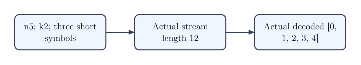
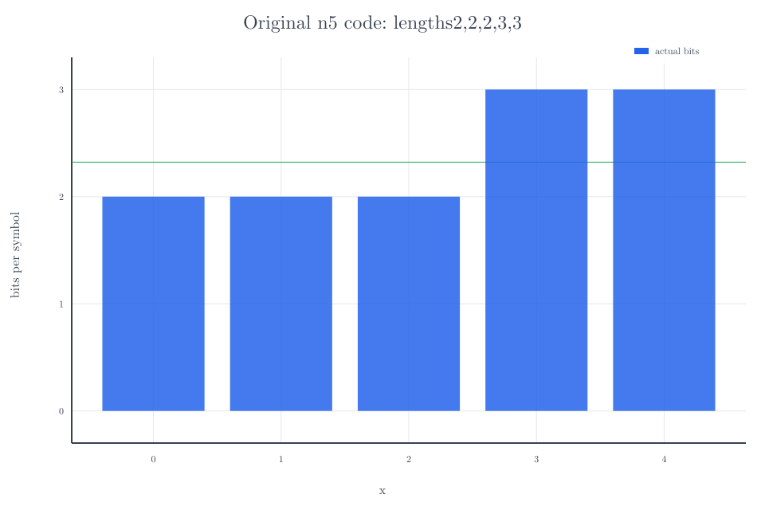
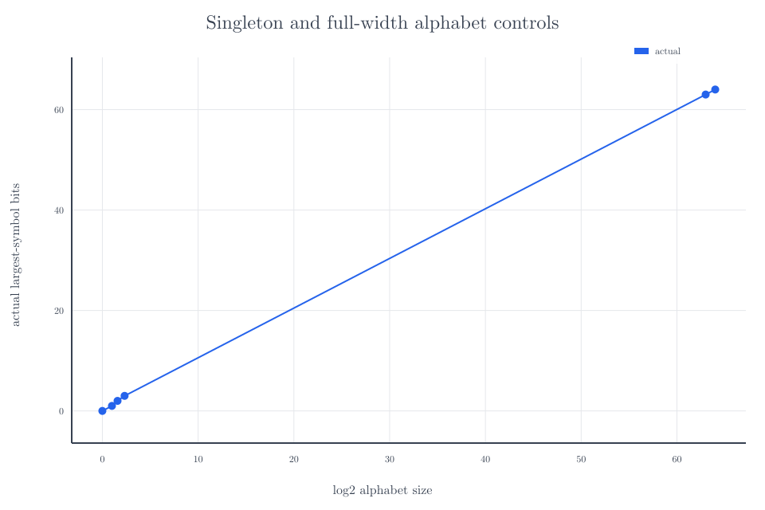
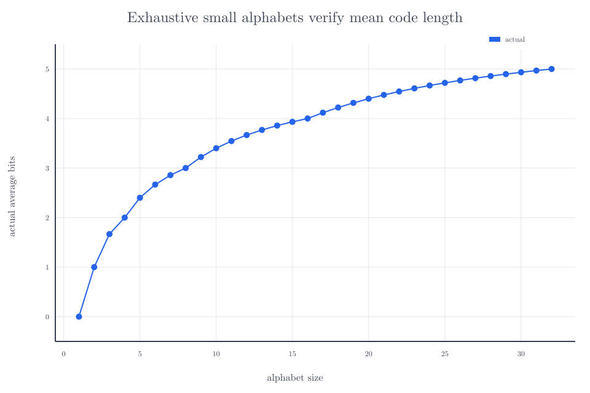

Truncated binary: complete codes across uint64 alphabets
Abstract
Encoding equally likely symbols from a non-power-of-two alphabet wastes bits in a fixed-width code. Truncated binary assigns two neighboring lengths while keeping the stream prefix-decodable.
The method
For n≥1, k=floor(log2 n) and u=2(k+1)−n. Encode v<u in k bits, otherwise encode v+u in k+1 bits. Decode k bits x; if x≥u, append one more bit then subtract u. Kraft equality u/2k+(n−u)/2^(k+1)=1 proves completeness. Mean length is k+(n−u)/n, between log2 n and log2 n+1. A singleton alphabet uses zero bits; its symbol count must be supplied externally.
Simple worked example
#include <dm/dm.hpp>
int main() {
namespace a = dm::algorithms;
namespace g = dm::graphics;
std::filesystem::create_directories("build");
auto bits = a::truncated_binary_encode({0, 1, 2, 3, 4}, 5);
auto values = a::truncated_binary_decode(bits, 5, 5);
std::print("| alphabet | actual bits | decoded |\n|---:|---|---|\n|5|`{}`|`{}`|\n",
bits, values);
g::Diagram concept_diagram(48, 1100);
concept_diagram.node("n0", {0, 0}, "n5; k2; three short symbols");
concept_diagram.node("n1", {5, 0},
std::format("Actual stream length {}", bits.size()));
concept_diagram.node("n2", {10, 0}, std::format("Actual decoded {}", values));
concept_diagram.edge("n0", "n1").edge("n1", "n2");
concept_diagram.save_svg("build/truncated_binary_tiny.svg");
}| alphabet | actual bits | decoded |
|---|---|---|
| 5 | [false, false, false, true, true, false, true, true, false, true, true, true] | [0, 1, 2, 3, 4] |

The retained original experiment
#include <dm/dm.hpp>
int main() {
namespace a = dm::algorithms;
namespace g = dm::graphics;
std::filesystem::create_directories("build");
std::vector<double> lengths;
std::vector<std::string> labels;
std::print("| symbol | actual code | bits |\n|---:|---|---:|\n");
for (std::uint64_t v = 0; v < 5; ++v) {
auto b = a::truncated_binary_encode({v}, 5);
std::string code;
for (bool bit : b)
code += bit ? '1' : '0';
std::print("|{}|{}|{}|\n", v, code, b.size());
lengths.push_back(b.size());
labels.push_back(std::to_string(v));
}
auto p = g::RPlot::barplot(lengths, labels, "actual bits", {37, 99, 235});
p.abline_h(std::log2(5.), {22, 163, 74});
p.title("Original n5 code: lengths2,2,2,3,3").y_label("bits per symbol");
p.save_svg("build/truncated_binary_original.svg");
auto b = a::truncated_binary_encode({0, 1, 2, 3, 4, 2, 0, 4}, 5);
std::print("\nOriginal round trip `{}`.\n",
a::truncated_binary_decode(b, 5, 8));
}| symbol | actual code | bits |
|---|---|---|
| 0 | 00 | 2 |
| 1 | 01 | 2 |
| 2 | 10 | 2 |
| 3 | 110 | 3 |
| 4 | 111 | 3 |
Original round trip [0, 1, 2, 3, 4, 2, 0, 4].

Checking the theory and controls
#include <dm/dm.hpp>
int main() {
namespace a = dm::algorithms;
namespace g = dm::graphics;
std::filesystem::create_directories("build");
std::vector<double> x, y;
std::print("| alphabet | largest symbol | actual bits | round trip |\n|---:|---:|---:|---|\n");
for (std::uint64_t n : std::vector<std::uint64_t>{1, 2, 3, 5,
UINT64_C(1) << 63,
UINT64_MAX}) {
auto b = a::truncated_binary_encode({n - 1}, n);
auto v = a::truncated_binary_decode(b, n, 1);
std::print("|{}|{}|{}|{}|\n", n, n - 1, b.size(), v[0] == n - 1);
x.push_back(std::log2(double(n)));
y.push_back(b.size());
}
auto p = g::RPlot::create();
p.line(x, y, "actual", {37, 99, 235}, 2);
p.points(x, y, "", {37, 99, 235}, 5);
p.title("Singleton and full-width alphabet controls").x_label(
"log2 alphabet size").y_label("actual largest-symbol bits");
p.save_svg("build/truncated_binary_controls.svg");
}| alphabet | largest symbol | actual bits | round trip |
|---|---|---|---|
| 1 | 0 | 0 | true |
| 2 | 1 | 1 | true |
| 3 | 2 | 2 | true |
| 5 | 4 | 3 | true |
| 9223372036854775808 | 9223372036854775807 | 63 | true |
| 18446744073709551615 | 18446744073709551614 | 64 | true |

Sensitivity and selected work
#include <dm/dm.hpp>
int main() {
namespace a = dm::algorithms;
namespace g = dm::graphics;
std::filesystem::create_directories("build");
std::vector<double> x, y;
std::print("| n | actual mean length | entropy |\n|---:|---:|---:|\n");
for (std::uint64_t n = 1; n <= 32; ++n) {
double sum = 0;
for (std::uint64_t v = 0; v < n; ++v)
sum += a::truncated_binary_encode({v}, n).size();
std::print("|{}|{}|{}|\n", n, sum / n, std::log2(double(n)));
x.push_back(n);
y.push_back(sum / n);
}
auto p = g::RPlot::create();
p.line(x, y, "actual", {37, 99, 235}, 2);
p.points(x, y, "", {37, 99, 235}, 5);
p.title("Exhaustive small alphabets verify mean code length").x_label(
"alphabet size").y_label("actual average bits");
p.save_svg("build/truncated_binary_work.svg");
}| n | actual mean length | entropy |
|---|---|---|
| 1 | 0 | 0 |
| 2 | 1 | 1 |
| 3 | 1.6666666666666667 | 1.584962500721156 |
| 4 | 2 | 2 |
| 5 | 2.4 | 2.321928094887362 |
| 6 | 2.6666666666666665 | 2.584962500721156 |
| 7 | 2.857142857142857 | 2.807354922057604 |
| 8 | 3 | 3 |
| 9 | 3.2222222222222223 | 3.169925001442312 |
| 10 | 3.4 | 3.321928094887362 |
| 11 | 3.5454545454545454 | 3.4594316186372973 |
| 12 | 3.6666666666666665 | 3.584962500721156 |
| 13 | 3.769230769230769 | 3.700439718141092 |
| 14 | 3.857142857142857 | 3.807354922057604 |
| 15 | 3.933333333333333 | 3.9068905956085187 |
| 16 | 4 | 4 |
| 17 | 4.117647058823529 | 4.087462841250339 |
| 18 | 4.222222222222222 | 4.169925001442312 |
| 19 | 4.315789473684211 | 4.247927513443585 |
| 20 | 4.4 | 4.321928094887363 |
| 21 | 4.476190476190476 | 4.392317422778761 |
| 22 | 4.545454545454546 | 4.459431618637297 |
| 23 | 4.608695652173913 | 4.523561956057013 |
| 24 | 4.666666666666667 | 4.584962500721156 |
| 25 | 4.72 | 4.643856189774724 |
| 26 | 4.769230769230769 | 4.700439718141092 |
| 27 | 4.814814814814815 | 4.754887502163468 |
| 28 | 4.857142857142857 | 4.807354922057604 |
| 29 | 4.896551724137931 | 4.857980995127572 |
| 30 | 4.933333333333334 | 4.906890595608519 |
| 31 | 4.967741935483871 | 4.954196310386875 |
| 32 | 5 | 5 |

Interpretation and limits
Wide intermediate arithmetic prevents shift-by64. The decoder now requires exactly the requested count and complete consumption: truncated and trailing streams throw. n0, out-of-range symbols and negative counts are rejected. This is a prefix code with two lengths, not a fixed-length code.
Every figure is saved locally by its complete editable program. No separate reconstruction supplies algorithm state. Counters describe the selected events, not elapsed time or peak memory.
References
Kraft equality and balanced binary prefix-tree derivation
Verified in the shared ten-document batch: 85 scoped native cases;21 directly
instrumented ASan/UBSan cases;36 executable public examples;63/63 definitions
across13 full scopes plus8 changed mixed-scope contracts;10 hovers;14393
independent records/67914 checks;frozen valid-input comparisons across all ten
families including bit-identical default Iris fits;11 checkout/installed
standalone headers and linked ten-family consumer;40 executed programs and40
inspected figures with both exports. Receipts:
build/mepml-conversion/batch-404-413/.